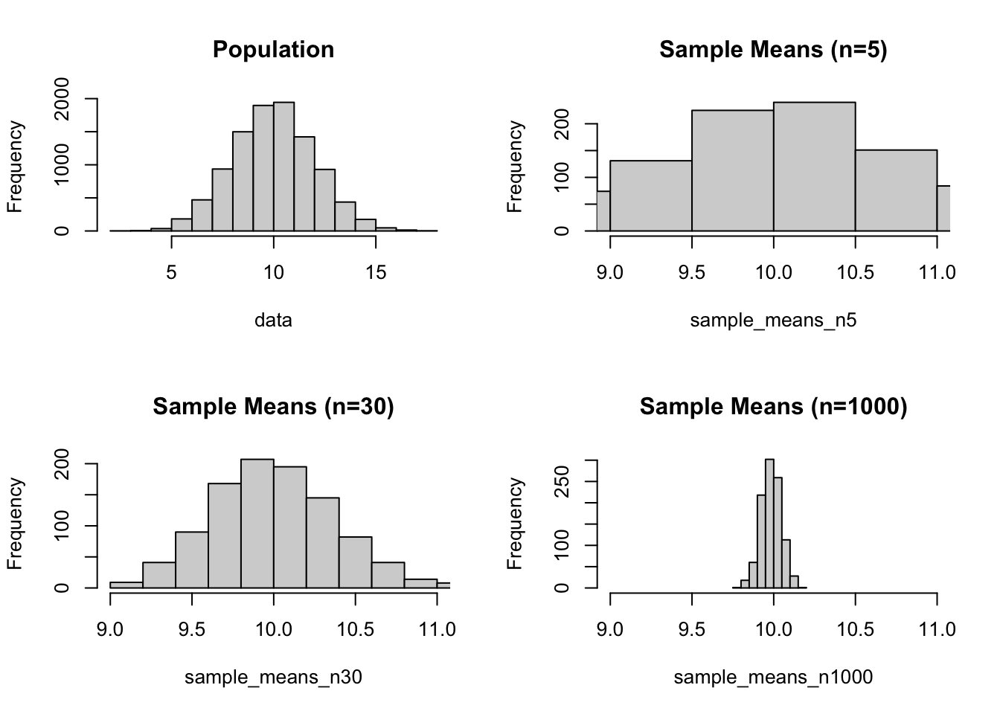
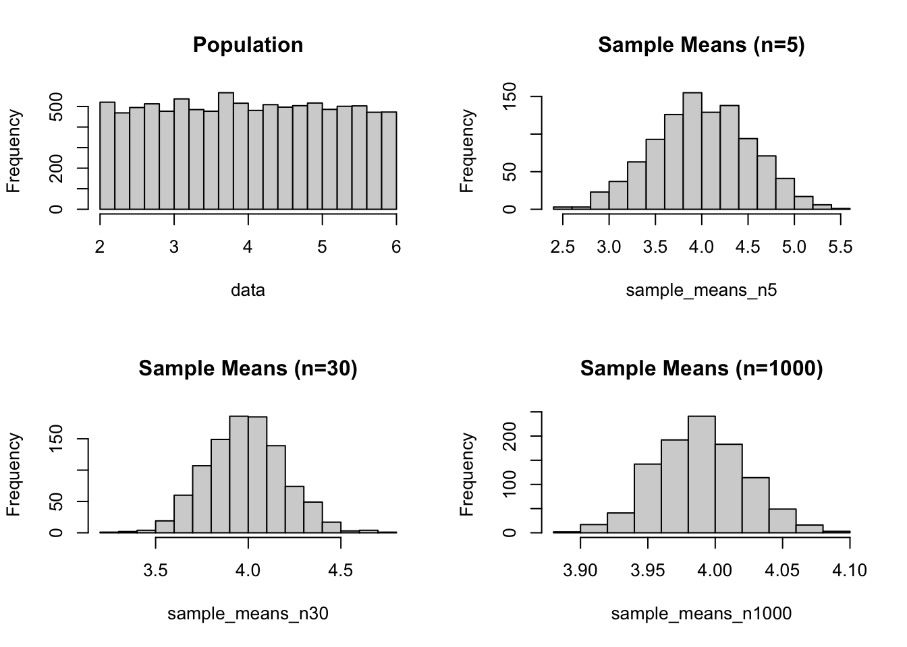
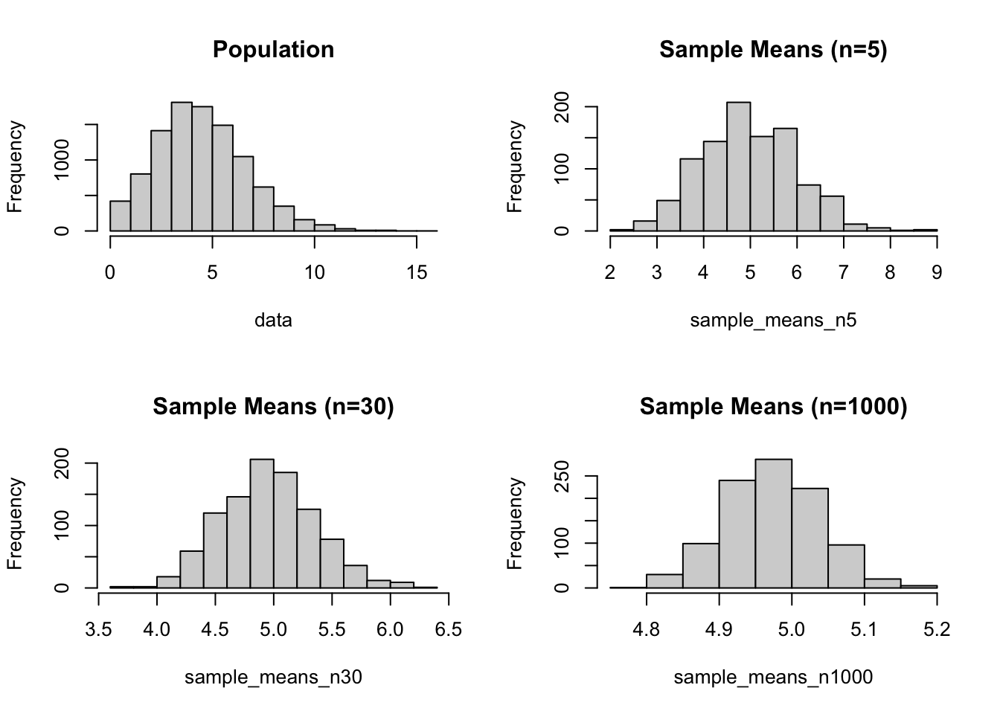
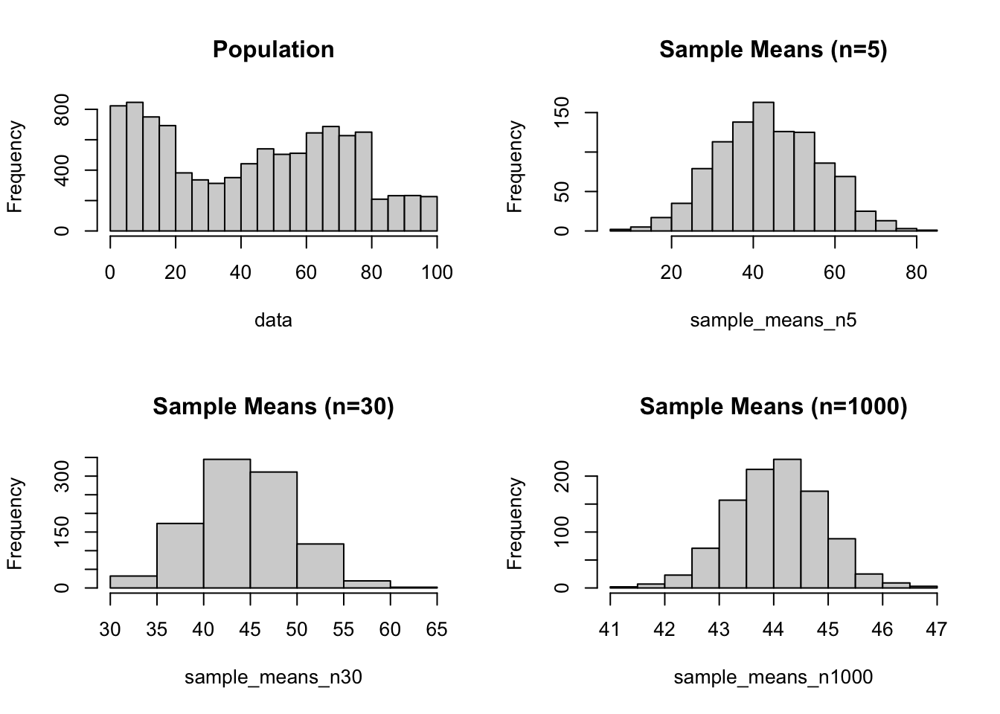
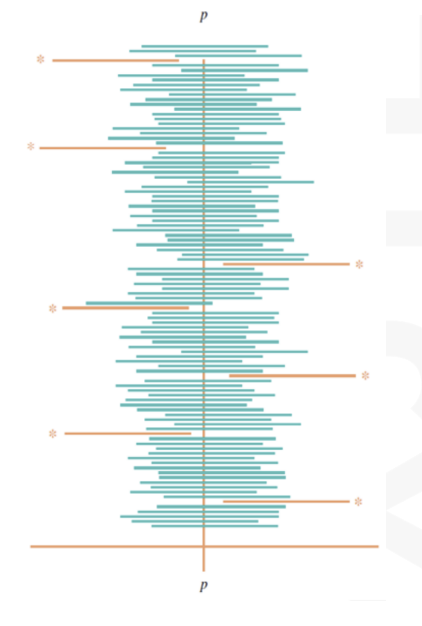
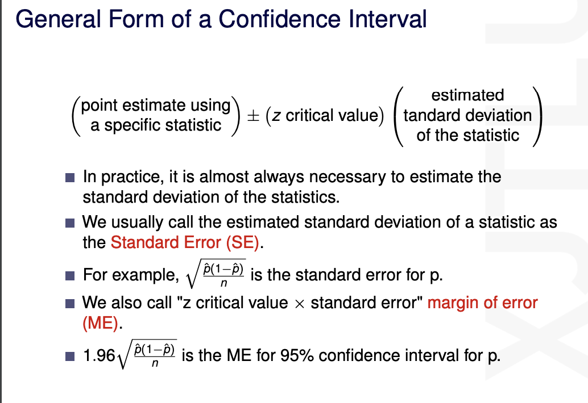
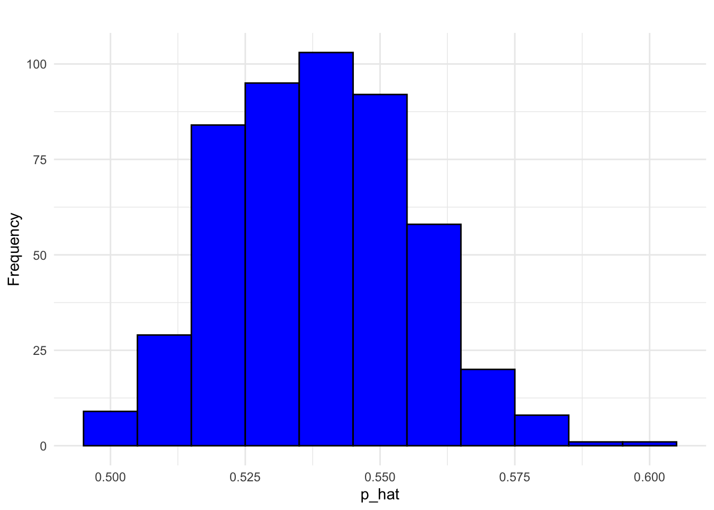

library(ggplot2)
library(gridExtra)APH101–Biostatistics and R Notes
CLT toy exampels
set.seed(003)
r <- 1000
data <- rnorm(n = 10000, mean = 10, sd = 2)
sample_means_n5 <- c()
for (i in 1:r){
sample_means_n5[i] <- mean(sample(data, 5))
}
sample_means_n30 <- c()
for (i in 1:r){
sample_means_n30[i] <- mean(sample(data, 30))
}
sample_means_n1000 <- c()
for (i in 1:r){
sample_means_n1000[i] <- mean(sample(data, 1000))
}
par(mfcol = c(2, 2))
hist(data, main='Population')
hist(sample_means_n30, main='Sample Means (n=30)', xlim=c(9, 11))
hist(sample_means_n5, main='Sample Means (n=5)', xlim=c(9, 11))
hist(sample_means_n1000, main='Sample Means (n=1000)', xlim=c(9, 11))
set.seed(123)
r <- 1000
data <- runif(n = 10000, min = 2, max = 6)
sample_means_n5 <- c()
for (i in 1:r){
sample_means_n5[i] <- mean(sample(data, 5))
}
sample_means_n30 <- c()
for (i in 1:r){
sample_means_n30[i] <- mean(sample(data, 30))
}
sample_means_n1000 <- c()
for (i in 1:r){
sample_means_n1000[i] <- mean(sample(data, 1000))
}
par(mfcol = c(2, 2))
hist(data, main='Population')
hist(sample_means_n30, main='Sample Means (n=30)')
hist(sample_means_n5, main='Sample Means (n=5)')
hist(sample_means_n1000, main='Sample Means (n=1000)')
set.seed(123)
r <- 1000
data <- rpois(n = 10000, lambda = 5)
sample_means_n5 <- c()
for (i in 1:r){
sample_means_n5[i] <- mean(sample(data, 5))
}
sample_means_n30 <- c()
for (i in 1:r){
sample_means_n30[i] <- mean(sample(data, 30))
}
sample_means_n1000 <- c()
for (i in 1:r){
sample_means_n1000[i] <- mean(sample(data, 1000))
}
par(mfcol = c(2, 2))
hist(data, main='Population')
hist(sample_means_n30, main='Sample Means (n=30)')
hist(sample_means_n5, main='Sample Means (n=5)')
hist(sample_means_n1000, main='Sample Means (n=1000)')
set.seed(003)
rprobs = sample(1:5, 5)
rprobs = rep(16*rprobs, each=20)
rprobs = rprobs + 20*runif(100)
rprobs = rprobs / sum(rprobs)
data = sample(1:100, size=10000, replace=TRUE, prob=rprobs)
sample_means_n5 <- c()
for (i in 1:r){
sample_means_n5[i] <- mean(sample(data, 5))
}
sample_means_n30 <- c()
for (i in 1:r){
sample_means_n30[i] <- mean(sample(data, 30))
}
sample_means_n1000 <- c()
for (i in 1:r){
sample_means_n1000[i] <- mean(sample(data, 1000))
}
par(mfcol = c(2, 2))
hist(data, main='Population')
hist(sample_means_n30, main='Sample Means (n=30)')
hist(sample_means_n5, main='Sample Means (n=5)')
hist(sample_means_n1000, main='Sample Means (n=1000)')
CI
? use CLT to construct an interval
Intro
Even the most efficient unbiased estimator is unlikely to estimate population parameter exactly.
If we were to construct a 95% confidence interval for some population characteristics (population proportion p or population mean \(\mu\)), we would be using a method that is successful 95% of the time.
This is also about the question relavent to “How to choose a sample size”
margin of error
For a given level of confidence c, The greatest possible distance between the point estimate and the value of the parameter it is estimating.
Sometimes called the maximum error of estimate or error tolerance.
Interpretation
For confidence level of 95%, t for any normal distribution: About 95% of the values are within 1.96 standard deviations of the mean. (Recall the concept of Z-scores)
That is, if this method was used to generate an interval estimate over and over again with different samples, in the long run 95% of the resulting intervals would include the actual value of the characteristic being estimated.
- The confidence level 95% refers to the method used to construct the interval rather than to any particular interval, such as the one we obtained.

eg
Proportion
- check to make sure that the three necessary conditions are met:
\(n\hat p \ge 10, n(1-\hat p) \ge 10\)
\(\hat p= (\hat p - , \hat p + 1.96)\)
(from : \(\frac {\hat p -p }{\sigma/\sqrt n} = 1.96\))

- sample size question
using sample proportion with 95% confidence interval, and we want ME no more than 5%, we may be interested in solving n from the following equation:
0.05=1.96 \(\sqrt {\frac {\hat p(1-\hat p) }{ n}}\)
Mean
- \(\sigma\) known
n \(\ge 30\)
- \(\sigma\) unknown — Use s as the estimate for σ (t-statistics with df )
Assumption: The population distribution is normal. (Remark:This assumption is not critical if the sample size is large, but it is important when the sample size is small.)
(t-statistics with df=n-1)
\(t = \bar x...\)
Hypothesis testing
opening: does these data (gained sleep hour) means the low dose of drugs improves the length of people’s sleep?
Suppose \(X_1,...X_n \sim^{iid}\) N\((\mu,\sigma^2)\) with both of 2 parameters unknown
- let \(t_{obs}=t(x)=\frac{\bar x - \mu _0}{s/\sqrt n}\)
Chi
Standard normal
the square sum of standard normal (MGF same)
（1-n-1/N-1） times Var(p)
Why n-1 in sampling variance
？
degree of freedom
ubiased estimation. (是指在已知sample时，这个无偏估计是所有估计中的平均值，这样我们才能称其为“无偏”。)

- sampling proportion is unbiased
E(\(\hat P\)) = E(X/n)=npn (binomial distribution) =p Var—also 如果E满足 variance 不满足呢
Simple random samlple
We know the total population but do not know p of our interests.
Based on hypergeometric probability calculation we can estimate p as \(\hat p = \text{intrests}/N= X_1+...+X_N/N\) where \(X_i\)~ Bernoulli(p) and \(\hat p\) is a random variable. Therefore, \(E[\hat p] = p\) (E\(X_i\)=p based on Bernouli distribution).
- If \(X_i\) are independent then E(\(X_1+X_2\)) = 2E(\(X_1\))
Here, eg. E\(\hat p^2\)= 1/n E\(X_1^2\)+n-1/nE\(X_1 X_2\)
Since \(X_1=1\) \(X_1^2=X_1\)
and E\(X_1 X_2\) = P\(X_1, X_2\)
Finally, we can look at the distribution of \(\hat p\), suppose we know the true p is 0.54, we can use simulation to randomly sample \(X_1,...X_n\) from Np people who support 1 and ……who support
- God’s perspective
library(ggplot2)
set.seed(111)
population_size <- 12141897
p <- 0.54
num_simulations <- 500
sample_size <- 1000
rep()NULLp_hat_values <- replicate(num_simulations, {
# Simulate sampling from the population
sample <- sample(c(rep(1,population_size * p), rep(0,population_size*(1-p))), sample_size, replace =FALSE) # replicate(num_simulations, {...})：这个函数会重复执行大括号中的代码num_simulations次，并将每次的结果存储在一个向量中； rep创建一个包含population_size * p个1和population_size * (1-p)个0的向量，模拟总体。
mean(sample) #calculate the p_hat for each sample
})
histogram <- ggplot(data.frame(p = p_hat_values), aes(x=p))+
geom_histogram(binwidth = 0.01, fill ="blue", color = "black")+
labs(title =" ",
x = "p_hat",
y= "Frequency")+
theme_minimal()
print(histogram)
doing this 500 times,
based on the central limit theory
Statistical inference and Probability distribution
estimation
condifidence intervals
hypothesis testing
Sample Space and Probability Measure
\(\sigma\) algebra \(F\) is a collection of satisfying :
full and null set
completerment
countably union
measurble we can find a function that takes the elements of F and output a real number
A probability measure is a mapping P:F–> R satisfying the following 3 axioms:
countably for mutually exclusive events \(A_1, A_2,...\in F\)
interpret the probability
frequentist view
Bayesian view
Borel set is a combination of open set in some spaces
library(ggplot2)
library(dplyr)
library(readr)
library(magrittr)
circ <- read_csv("Charm_City_Circulator_Ridership.csv")
## take just average ridership per day
avg = circ %>%
filter(type == "Average")
# keep non-missing data
avg = avg %>%
filter(!is.na(number))Moment Generating Functions
\(M_x (t)=E(e^{tx})\)
case 1
\(M_x\) may not exist. When it exists in a neighborhood of 0, using talor
\[e^{tx}=1+tX+(tX)^2/2+...\]
\[M_x(t)=1+t\mu+t^2 \mu/2+...\]
\(\mu_j = E(X^i)\) is the j-th moment of X. Therefore,
\[E(X^i)=M^{(j)}(0)\]
eg. Then we could also get the variance by take the 2nd order derivatives
case 2
\(\int\)
eg. normal
- X~N(0,1)
idea: try to write an integral of a certain distribution’s pdf and we get the result of this integral as 1. here, we get the pdf of the N(t,1) and finally we get \(e^{t^2/2}\)
- X~N(\(\mu, \sigma^2\))
Then X=\(\mu+\sigma Z\) where Z~N(0,1)
\[M_x(t)=E[e^{tx}]=e^{\mu t} E[e^{\sigma t Z}]=e^{\mu t} M_Z(\sigma t)=e^{\mu t +\sigma^2 t^2/2}\]
Gamma disteibution
the family of gamma distributions generalizes the family of exponential distributions. The gamma distribution with shape r and rate \(\lambda\)